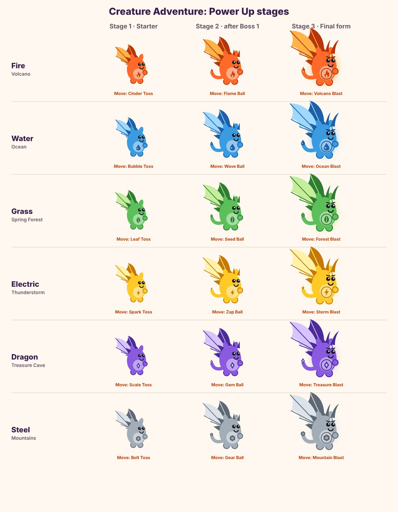
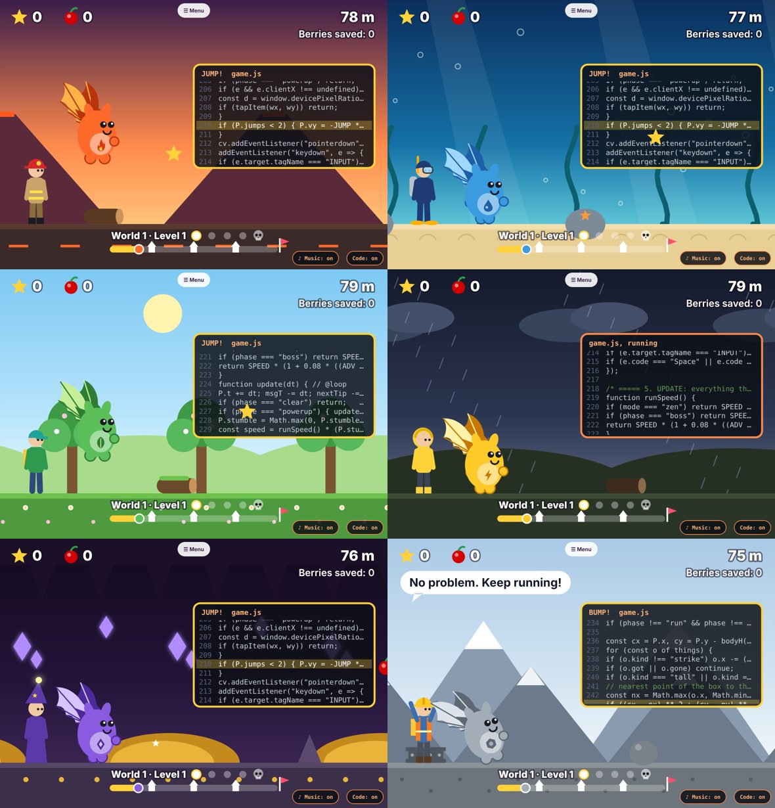
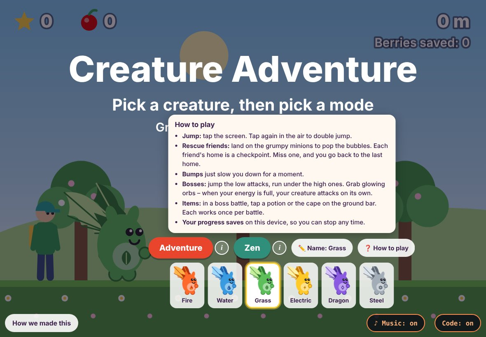
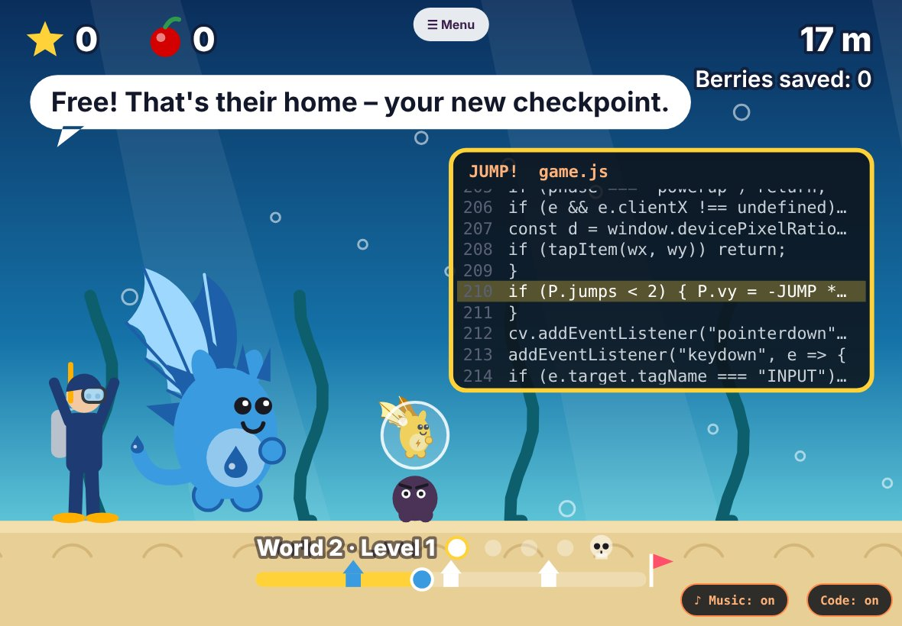
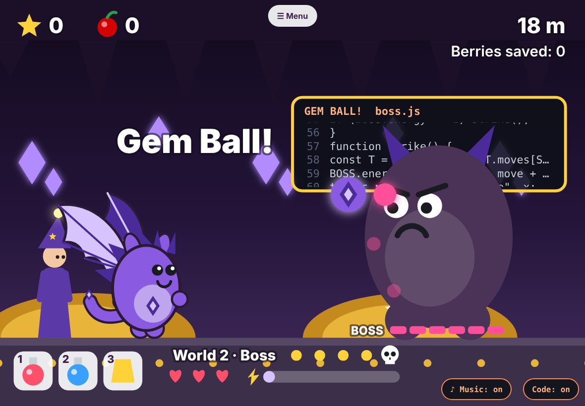

Where it started
This game started with a different project. I built myself a focus room – a Formula 1 pit wall with a timer, music, and a scratch pad – to help me sit down and get work done. I built it with Claude, one small piece at a time – I described what I wanted, and Claude worked out the code – and wrote up how it went (here's that write-up, and here's the focus room itself).
The biggest lesson from that build is the reason this game looks the way it does. The garage, the crew, and the car in the focus room are all drawn in code instead of painted images – so when I wanted to change something, I just asked for it in a conversation. That's what convinced me we could build a 2D game the same way, with every creature, rock, and volcano made out of shapes.
Once it worked, the obvious next question came from my son: could we build one for HIM? We kicked around a few ideas, and the one that stuck was a game. I brought him a rough pitch: a creature that runs, jumps, collects things, and grows up along the way. Everything after that is mostly his.
How we designed it
Asking a nine-year-old open questions gets you a lot of very fast talking. So I built him an interview page with checkboxes – pick the feel, pick the creatures, pick the controls – because I wasn't going to be typing while he talked, and we recorded the conversation while he went through it. He could answer at his own speed, and every answer gave us something to talk about.
A few of his calls that I never would have made:
- The name. I suggested a name with "Dash" in it. He turned it down because it "sounds like there's no evolving."
- No puddles. Water creatures would just walk through them, so what's the point?
- The first creature is round, with wings to glide, spikes to stay on the ground, and fins to bounce.
- The flame. My first flame mark on the creature's belly was shaped like a teardrop. He took one look and said it made the creature look like a Water type. He was right – flames point UP now. Then he noticed the new flame sat too close to the mouth, so the creatures got taller to give the mark room in the middle of the belly. Every type gets its own mark now (the teardrop went to Water).
- Real wings, and hands. The first wings were little triangles. He wanted bat wings, with the fingers and the scalloped edge, plus circle hands and circle feet – a bit more like the trainer, but still a blob.
- A world for every type. He picked them all: Fire runs through a volcano, Water along the ocean floor, Grass through a spring forest, Electric through a thunderstorm, Dragon through a cave full of treasure, and Steel over the mountains.
- A trainer who dresses for the weather. Scuba gear for the ocean, a firefighter's helmet at the volcano, a yellow rain jacket in the thunderstorm, a hard hat in the mountains, and a wizard hat with a light on top to see in the treasure cave. In the spring forest, the trainer gets to just be the trainer.
- Controls are tap to jump and double tap to double jump. Nothing else. He was firm on that, and it's held up every time we've tested a new idea against it.


My calls were the less exciting ones, the habits I've picked up from years of web, email, and marketing design: a tap-to-explain "i" on every mode, a level marker so you always know where you are, picking a creature by tapping its picture, centered button text, and an app icon that says "CA" because the full name won't read that small (the icon itself was his idea).
Where we disagreed
We didn't agree on everything (we're related, after all).
The big one was time. The music tracks are about two and a half minutes long, so I wanted every level to last about two minutes. He hated it, and told me exactly why:
Every time there is minutes, it always rushes me.
He was right. So levels are now a set distance instead of a set time, with a progress bar and a flag at the finish. Under the hood it still works out to about two minutes, but he never sees a clock counting down.
The other one: I said there would be no weapons in this game. Instead of arguing, he turned it into something better – creatures fill up an energy bar and use their OWN moves, and the rescued creatures hand you potions and gear for the boss.
How you play

| Mode | What it is |
|---|---|
| Adventure | Three worlds, one for each stage. Each world has four levels and then a boss. Your progress saves on your device, so you can stop and pick up where you left off. |
| Zen | Relaxed, endless running with calm music – no way to lose. Just practise, and try to beat your best distance. |
Levels. Each level is the same every time, so you can learn it. The boss's minions are carrying captured creatures in bubbles – land on a minion to pop the bubble and free its friend. That friend's home becomes your checkpoint. Miss one, and you head back to the last home to try again. A progress bar along the bottom shows the homes and the finish flag, with five dots for the world's levels (the last one is a little skull: that's the boss).

Gifts from rescued creatures. In levels 1 to 3, the last friend you save gives you something for the boss fight: a Health Potion, an Energy Potion, or a Cape that blocks one hit. In level 4, they give you the key to the boss's lair. Each item works once per boss battle – tap it when you need it.
The boss sends slow attacks high and low. Jump the low ones, run under the high ones. Grab glowing orbs to fill your energy bar, and when it's full, your creature uses its move on its own, aimed at the boss's glowing weak spot. Break all three weak spots and the boss gets dizzy and floats away, dropping a Power Up. Lose all your hearts, and the battle starts over – that's a chance to try again, not a loss.

Power Up. Beat the boss, grab what it drops, and your creature Powers Up – bigger, with something new, and a new move. Then it's on to the next world. Beat all three bosses, and you've beaten the adventure.
Names. His idea: let players decide. Give your creature its own name, or just keep the type. Either way, it saves on your device.
This is the game as of November 2026. It will change (he has opinions).
How it's built
- A few small files. No game engine and no downloads – just HTML, CSS, and JavaScript that runs in the browser, hosted for free on GitHub Pages. Each file has one job:
knobs.jsholds the numbers, colours and words,creatures.jsdraws the creatures,trainer.jsdresses the trainer,worlds.jsdraws the six worlds,adventure.jsruns the levels,boss.jsruns the boss battles, andgame.jsties it all together. - Everything is drawn in code. The creatures, the six worlds, the trainer – all circles, triangles, and curves.
- Six creatures, one drawing. Every type uses the same drawing code. A short list in the knobs gives each one its colours, its belly mark, its world, and its three moves, so changing the Dragon's purple (or renaming a move) is a one-line edit.
- The knobs. One file,
knobs.js, holds the numbers and words that are safe to play with: speed, jump height, gravity, colours, move names, what the trainer says. They live in the code, not in the game – change one, reload, and see what it does. - The code monitor. Tap "Code: on" in the game, and a screen in the sky shows the real code running. When you jump, the line that makes you jump lights up. When you rescue a friend or hit the boss, it jumps to that file and lights up that line. I added that one for both of us.
- The music is the same set of tracks from my focus room. Each world has its own, the boss has its own, and Zen gets the calmest one.
- It works on a computer, too. When I played it on my MacBook, the keyboard already worked – Space or the Up arrow to jump – but nothing on screen said so. Now the start screen tells you, and in a boss battle the 1, 2 and 3 keys use your items, so you don't have to grab the mouse mid-fight. The hint only shows up on computers, so it doesn't clutter the screen on an iPad.
- Saved on your device only. Your progress, your names, your berries and your best distance stay in your own browser. There are no accounts and nothing gets sent anywhere.
A lesson from launch day. My first try at putting it on GitHub failed: "The file is too large." Every file was well under the limit – the biggest music track is about 4 MB – but I'd dragged all of it in at once, about 40 MB in a single commit. Splitting it fixed it: the code, pictures and icons went up first, then the music in its own commit. The game works fine before the music arrives – it just runs quiet.
I'm learning to vibe code alongside him: we tell Claude what we want the game to do, and Claude works out how to build it. We build in short sessions that each end with something that works, and we decide together what goes in next – or, more often, he decides and I explain why it'll take more than one night.
Want to try it?
It plays on an iPad, a phone, or a computer – best on an iPad, and best turned sideways (landscape) on any of them. On an iPad or phone, add it to your Home Screen so Safari doesn't clear your saved progress. If you've got a young designer at home, I highly recommend the checkbox interview approach. What would yours put in a game?
- Dad (and the lead designer)
↑ Back to top